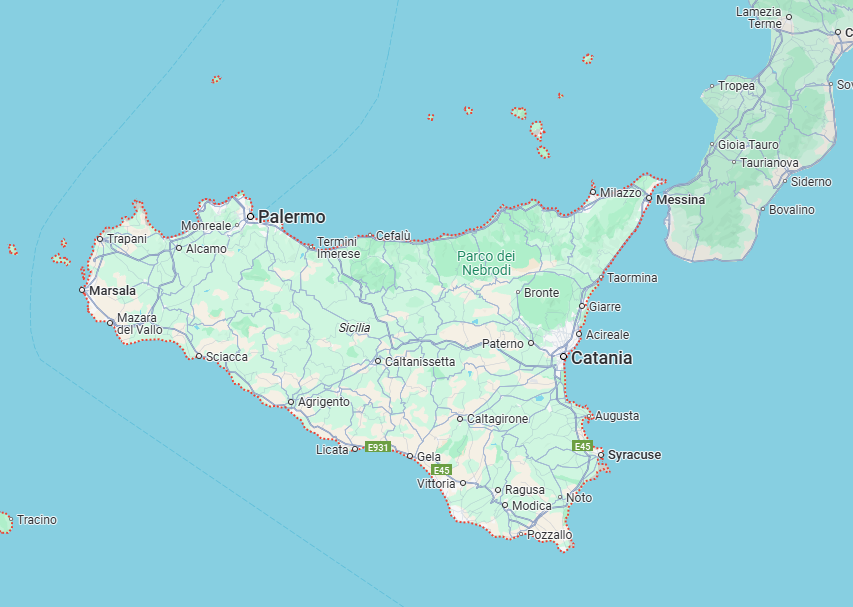

Fredrick Gustavo was born in Sicily to single father Jame Giorni. Jame lead a disorganized crime ring with his brother Jame, known as the James Bros Sicilian Volunteers, known for their heinous acts of mild shoplifting and moderate to severe loitering. In an attempt to escape a life of crime, Fredrick (or Fred), began waiting tables for a local coffee shop The Brewster with a dream of one day buying and running the shop himself. However, when his family herritage finally caught up to him, he fled to New York City, where he continues waiting tables at The Brewster remotely.

Sicily. Screenshot taken from Google Maps
Family
Fred has a beautiful family, consisting of 1 wife Dalia, 7 biological children, and 2 adopted cats.
Dalia
Dalia is an aerospace engineer for a local gas station. She grew up in Florida Ohio.
Boys
Fred and Dalia have 4 1/2 boys
- Jame Jr.
- Barney
- Johnathan
- Jame IV
- £¤¥¦¬§
Girls
Fred and Dalia have 2 1/2 girls
- Frederica
- Paula
- Abig
Pets
The Gustavos have no cats
- Fluffy
- Mittens
- Jame VII